Introdução
Informações Gerais
- Projeto: EVENTIFY
- Repositório GitHub: https://github.com/ICEI-PUCMinas-PSG-SI-TI/icei-pucminas-psg-si-m-tiaw-2024-1-eventify
- Membros da equipe:
Contexto
O lazer, a arte e a cultura são direitos intrínsecos aos indivíduos de uma sociedade e compõem elementos de extrema importância comunicativa, identitária e humanitária.
Em contraponto a isso, observa-se nos dias de hoje um afastamento da população a locais de eventos culturais como teatros, museus e cinemas. Observa-se que, ao mesmo tempo que a criação e o acesso a conteúdos digitais se faz cada vez mais amplo, o consumo se torna cada dia mais descartável, temporário e efêmero, como se pode observar na dissertação sobre a modernidade líquida de Zygmunt Bauman. O interesse das pessoas por eventos ao vivo é cada vez menor, a busca é escassa e a informação sobre isso acaba sendo ocultada por outros conteúdos imediatistas.
Com isso, é de extrema importância a existência de ferramentas que auxiliem a população a encontrar, se conscientizar e ser avisada sobre os mais diversos eventos culturais de sua cidade, visando alcançar uma sociedade que consuma e que consequentemente produza mais a arte e que desenvolve seu senso crítico perante o mundo.
Problema
Diante da situação exibida, o problema que se busca resolver com este projeto é a escassez de canais que centralizem e facilitem a busca por eventos de cunho cultural e artístico nas cidades do Brasil.
Objetivos
O objetivo geral deste trabalho é a criação de um portal que apresente ferramentas de fácil uso e que permita o cadastro e o acesso dos mais variados eventos culturais das cidades do país.
Como objetivos específicos, pode-se ressaltar:
- Fornecer funcionalidades que permitam cadastrar eventos com diversas informações sobre ele;
- Permitir acessar, compartilhar e comentar eventos cadastrados;
- Permitir filtrar eventos de acordo com o interesse do usuário;
Justificativa
Com a grande quantidade de fontes de informação presente hoje nas redes, junto à massiva variedade de dados disseminados, muitas vezes se torna difícil encontrar um espaço que unifique a busca por conteúdos do mesmo nicho que atendam as expectativas do usuário.
Público-alvo
Mesmo tendo em vista a prática cultural como um direito de todos, o foco desse projeto está no público que frequenta e busca por eventos e espaços urbanos de cunho artístico. Com isso, o público alvo desta solução se caracteriza por homens e mulheres entre 21 e 55 anos que costumam praticar suas atividades de lazer em cinemas, cafés, teatros e museus, e que preferem ter uma experiência presencial à digital.
Concepção (Design Thinking)
Processo de Design Thinking
O arquivo que se segue apresenta o resultado desse processo.
Especificações do Projeto
Documentação das especificações do projeto.
Histórias de Usuários
Com base na análise das personas foram identificadas as seguintes histórias de usuários:
| EU COMO... | QUERO/PRECISO... | PARA... |
|---|---|---|
| Usuário do sistema | Ver minhas informações de cadastro. | Saber se eu preenchi elas corretamente. |
| Usuário do sistema | Poder editar meus dados de cadastro. | Poder corrigir algumas informações que eu tenha inserido incorretamente ou que tenha mudado com o tempo. |
| Promotor de eventos | Cadastrar eventos organizados por mim. | Encontrar pessoas que tenham os mesmos interesses que eu e compartilhar conhecimentos. |
| Promotor de eventos | Alterar as informações dos eventos que eu criei. | Corrigir informações que eu possa ter inserido incorretamente ou que mudaram com o tempo. |
| Promotor de eventos | Ver a lista de eventos criados por mim. | Poder ver de forma ampla todos os eventos que eu já criei no site e poder organizá-los e editá-los caso necessário. |
| Promotor de eventos | Poder excluir um evento que eu tenha criado. | Conseguir controlar melhor os eventos que eu criei. |
| Usuário do sistema | Encontrar eventos do meu interesse na cidade. | Garantir minha participação nos eventos desejados e me organizar melhor nas minhas práticas culturais. |
| Usuário do sistema | Salvar eventos e depois poder encontrá-los. | Guardar os eventos que mais me interessam e poder localizá-los mais facilmente depois. |
| Usuário do sistema | Ser notificada sobre se algum evento que eu curti está próximo de acontecer. | Ter um maior controle da data dos eventos que eu tenho interesse. |
| Usuário do sistema | Poder acessar um evento e ver suas informações principais. | Ter conhecimento sobre as informações do evento como localização, nome, descrição, data, local, etc. |
| Usuário do sistema | Poder adicionar um comentário nos eventos. | Poder compartilhar minha experiência e opinião sobre aquele assunto abordado. |
| Usuário do sistema | Poder excluir um comentário que tenha feito. | Poder ter controle das informações que compartilho na internet. |
| Usuário do sistema | Ver todos os comentários cadastrados em um evento. | Ter noção da opinião e dos pensamentos de outras pessoas sobre aquele assunto. |
| Usuário do sistema | Poder denunciar um evento. | Poder alertar os responsáveis pelo site sobre algum assunto sensível, informação errada ou golpe. |
| Usuário do sistema | Poder ver em um mapa a localização do evento e a minha. | Ver se a distância entre mim e o local do evento é muito grande ou não. |
Requisitos
As tabelas que se seguem apresentam os requisitos funcionais e não funcionais que detalham o escopo do projeto.
Requisitos Funcionais
| ID | Descrição do Requisito | Prioridade |
|---|---|---|
| RF-01 | O site deve permitir que os usuários se cadastrem no sistema. | ALTA |
| RF-02 | O site deve permitir que os usuários cadastrados efetuem o login. | ALTA |
| RF-03 | O site deve exibir as informações do usuário através de um perfil. | BAIXA |
| RF-04 | O site deve permitir ao usuário editar suas informações de cadastro. | BAIXA |
| RF-05 | O site deve permitir ao usuário cadastrar novos eventos. | ALTA |
| RF-06 | O site deve permitir ao usuário editar as informações do evento que ele tenha criado. | ALTA |
| RF-07 | O site deve listar os eventos criados pelo usuário em uma tela específica. | ALTA |
| RF-08 | O site deve listar os eventos cadastrados na home page e permitir favoritar um evento. | MUITO ALTA |
| RF-09 | O site deve exibir os eventos favoritos do usuário em uma tela específica. | MÉDIA |
| RF-10 | O site deve permitir ao usuário filtrar os eventos exibidos na home page do site. | MÉDIA |
| RF-11 | O site deve exibir um pop-up na home page avisando sobre eventos próximos curtidos pelo usuário. | BAIXA |
| RF-12 | O site deve exibir os detalhes de um evento específico. | ALTA |
| RF-13 | O site deve permitir ao usuário excluir os eventos que ele cadastrou. | MUITO ALTA |
| RF-14 | O site deve permitir ao usuário visualizar a lista de comentários cadastrados em um evento. | MÉDIA |
| RF-15 | O site deve permitir ao usuário adicionar um comentário nos eventos. | MÉDIA |
| RF-16 | O site deve permitir ao usuário excluir o comentário que ele cadastrou no evento. | MÉDIA |
| RF-17 | O site deve permitir que o usuário denuncie um evento. | ALTA |
| RF-18 | O site deve exibir um mapa com a localização dos eventos. | BAIXA |
Requisitos Não-Funcionais
| ID | Descrição do Requisito | Prioridade |
|---|---|---|
| RNF-01 | O site deve ser responsivo e ter tempos de carregamento rápidos. | ALTA |
| RNF-02 | A arquitetura do site deve ser projetada de modo para que possa lidar com um aumento significativo no número de usuários e eventos sem comprometer o desempenho. | ALTA |
| RNF-03 | O site deve ser acessível para todos os usuários, incluindo aqueles com deficiências visuais, auditivas ou motoras, seguindo as diretrizes de acessibilidade da Web (WCAG) | ALTA |
| RNF-04 | O site deve ter uma interface intuitiva e fácil de usar, com navegação clara e instruções claras para maximizar a satisfação do usuário. | MÉDIA |
| RNF-05 | O site deve ser compatível com uma variedade de navegadores da web, incluindo Chrome, Firefox, Safari e Edge. | MÉDIA |
| RNF-06 | O site deve adaptar o conteúdo e as informações para atender às necessidades e expectativas dos usuários locais, incluindo idioma, moeda e cultura. | MÉDIA |
Projeto de Interface
Artefatos relacionados com a interface e a interacão do usuário na proposta de solução.
User/Screen Flow e Protótipo interativo
Wireframes
Protótipo de telas do sistema em baixa fidelidade (rascunhos).
Home page
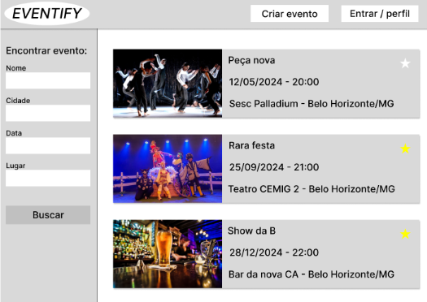Tela de Login e Cadastro
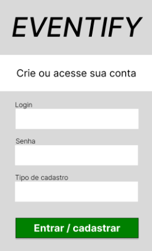Tela de Perfil de Usuário
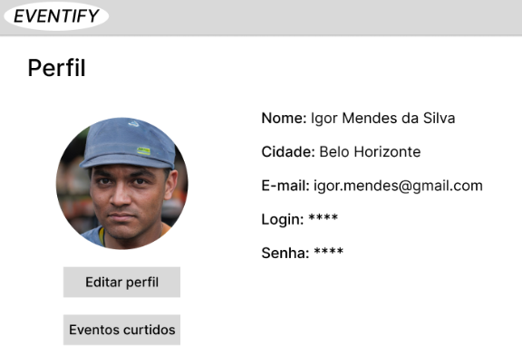Tela de Cadastro de Eventos
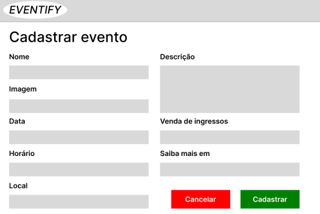Tela de Visualização do Evento
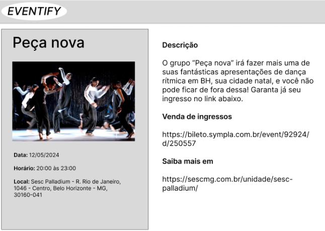Tela de Eventos Curtidos
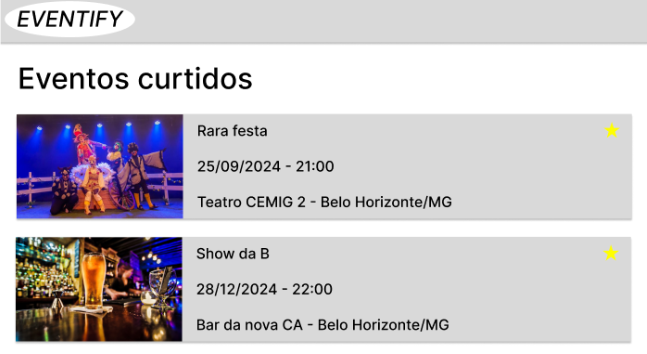Tela de Eventos Criados
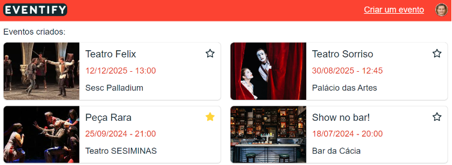Mapa de eventos
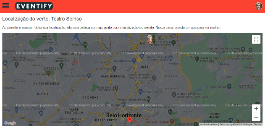Metodologia
A metodologia engloba as especificações das ferramentas utilizadas pela equipe, tanto para a manutenção dos códigos e outros artefatos, quanto para a organização do time durante a execução das tarefas do projeto.
Ferramentas
Relação de ferramentas empregadas pelo grupo durante o projeto.
| Ambiente | Plataforma | Link de Acesso |
|---|---|---|
| Repositório de código fonte | GitHub | https://github.com/ICEI-PUCMinas-PSG-SI-TI/icei-pucminas-psg-si-m-tiaw-2024-1-eventify |
| Documentos do projeto | Google Drive | https://drive.google.com/drive/folders/1mEO_ThoLRNNVyxzI9WEqPUzdOVqC6Ets?usp=sharing |
| Projeto de Interface e Wireframes | Figma | https://www.figma.com/design/3gvZ9TbP9Fs80AsoGw4na1/EVENTIFY?node-id=3-203&t=FWxnegg9Njm7slWk-1 |
| Gerenciamento do Projeto | Planner | https://tasks.office.com/sgapucminasbr.onmicrosoft.com/Home/PlanViews/QCk9bOOJA0-VwOCjStLo5WQAAr7o?Type=PlanLink&Channel=Link&CreatedTime=638486402733080000 |
Gestão do Projeto
A equipe utiliza metodologias ágeis, tendo escolhido o Scrum como base para definição do processo de desenvolvimento.
A equipe está organizada da seguinte maneira:
- Scrum Master: Wagner Alexsander de Carvalho Viana
- Product Owner: Felipe Rodrigues Roque
- Equipe de Desenvolvimento
- Gustavo Coelho de Mendonça (Desenvolvedor)
- Rogério Gabriel Lima Dias
- Tiago dos Reis Gomes (Desenvolvedor)
Controle de Versão
Para organização e distribuição das tarefas do projeto, a equipe está utilizando o Trello estruturado com as seguintes listas:
- Product Backlog: recebe as tarefas a serem trabalhadas a médio e longo prazo. Todas as atividades identificadas no decorrer do projeto também devem ser colocadas nesta lista.
- To Do: Esta lista representa o Sprint Backlog. Este é o Sprint atual que estamos trabalhando.
- Doing: Quando uma tarefa tiver sido iniciada, ela é movida para cá.
- Done: nesta lista são colocadas as tarefas que estão prontas para serem entregues ao usuário. Não há mais edições ou revisões necessárias, ele está agendado e pronto para a ação.
Solução
Essa seção tem por objetivo apresentar os detalhes técnicos da implementação da solução criada pelo time, tratando da Arquitetura, as estruturas de dados e as telas implementadas.
Video do Projeto
O vídeo a seguir traz uma apresentação do problema que a equipe está tratando e a proposta de solução.
Funcionalidades
Esta seção apresenta as funcionalidades da solução.
Funcionalidade 01 - Home page
Tela principal do sistema onde serão listados os eventos cadastrados com uma separação entre eventos passados e eventos futuros. É possível favoritar os eventos caso a pessoa esteja autenticada e ela será notificada via pop-up nesta tela caso algum desses eventos for ocorrer no dia seguinte ao acesso no site. Também é possível filtrar os eventos pelo menu lateral.
- Estrutura de dados: Pessoas e Eventos
- Instruções de acesso:
- Abra um navegador de Internet e informe a seguinte URL: https://replit.com/join/vwqjigzsgn-wagneracviana
- A home page é a primeira tela exibida.
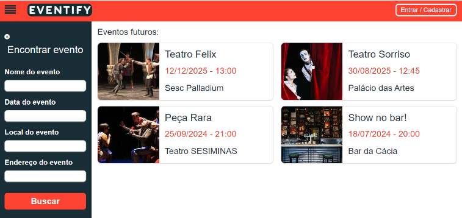
Funcionalidade 02 - Login/Cadastro de pessoa
Tela onde as pessoas poderão cadastrar suas contas no site ou realizar o login caso já tenham cadastro. Para se cadastrar como um promotor a pessoa deve inserir um CNPJ que seja encontrado e esteja ATIVO na receita federal. Essa validação é feita utilizando a API da receita.
- Estrutura de dados: Pessoas
- Instruções de acesso:
- Abra um navegador de Internet e informe a seguinte URL: https://replit.com/join/vwqjigzsgn-wagneracviana
- Clique em Entrar/Cadastrar no canto superior direito da header do Home.
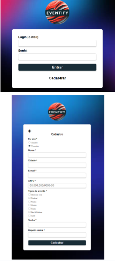
Funcionalidade 03 - Perfil do usuário
Tela onde a pessoa poderá visualizar e editar suas informações de cadastro e sua foto de perfil.
- Estrutura de dados: Pessoas
- Instruções de acesso:
- Abra um navegador de Internet e informe a seguinte URL: https://replit.com/join/vwqjigzsgn-wagneracviana
- Clique em Entrar/Cadastrar no canto superior direito da header do Home.
- Execute o login ou faça um cadastro.
- Clique no ícone da pessoa no canto superior direito da header do Home e depois clique em perfil.
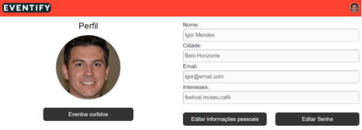
Funcionalidade 04 - Criar/Editar eventos
Tela onde o promotor conseguirá cadastrar novos eventos ou editar as informações de um evento que já tenha cadastrado.
- Estrutura de dados: Pessoas e Eventos
- Instruções de acesso para criar um novo evento:
- Abra um navegador de Internet e informe a seguinte URL: https://replit.com/join/vwqjigzsgn-wagneracviana
- Clique em Entrar/Cadastrar no canto superior direito da header do Home.
- Execute o login ou faça um cadastro como promotor
- Clique no botão Cadastrar novo evento no canto superior direito da header do Home.
- Preencha o formulário e depois clique em salvar.
- Instruções de acesso para editar um evento existente:
- Abra um navegador de Internet e informe a seguinte URL: https://replit.com/join/vwqjigzsgn-wagneracviana
- Clique em Entrar/Cadastrar no canto superior direito da header do Home.
- Execute o login ou faça um cadastro como promotor
- Crie um evento assim como descrito anteriormente.
- Clique no ícone da pessoa no canto superior direito da header do Home e depois clique em Meus eventos.
- Clique no card do evento que deseja editar.
- Role a tela para baixo e clique em editar.
- Preencha o formulário e depois clique em salvar.
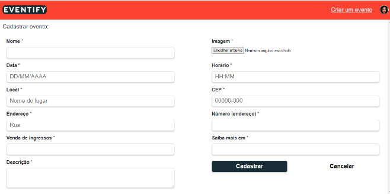
Funcionalidade 05 - Eventos criados
Tela onde o promotor irá visualizar os eventos que ele cadastrou.
- Estrutura de dados: Pessoas e Eventos
- Instruções de acesso:
- Abra um navegador de Internet e informe a seguinte URL: https://replit.com/join/vwqjigzsgn-wagneracviana
- Clique em Entrar/Cadastrar no canto superior direito da header do Home.
- Execute o login ou faça um cadastro como promotor.
- Crie um evento assim como descrito anteriormente.
- Clique no ícone da pessoa no canto superior direito da header do Home e depois clique em Meus eventos.
Funcionalidade 06 - Eventos favoritos
Tela onde o usuário irá visualizar os eventos que ele favoritou.
- Estrutura de dados: Pessoas e Eventos
- Instruções de acesso:
- Abra um navegador de Internet e informe a seguinte URL: https://replit.com/join/vwqjigzsgn-wagneracviana
- Clique em Entrar/Cadastrar no canto superior direito da header do Home.
- Execute o login ou faça um cadastro
- Na home page, favorite um evento ao clicar no ícone de estrela que fica dentro do card do evento.
- Clique no ícone da pessoa no canto superior direito da header do Home e depois clique em Eventos favoritos.
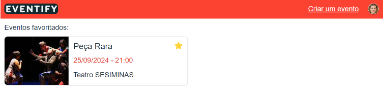
Funcionalidade 07 - Visualizar evento
Tela onde a pessoa, autenticada ou não, conseguirá ver as informações detalhadas de um evento e os comentários cadastrados neles. O promotor daquele evento poderá excluí-lo e editá-lo. Usuários logados poderão adicionar um comentário por evento e excluir os comentários que eles mesmos tenham feito, além de conseguirem fazer uma denuncia por evento.
- Estrutura de dados: Pessoas e Eventos
- Instruções de acesso:
- Abra um navegador de Internet e informe a seguinte URL: https://replit.com/join/vwqjigzsgn-wagneracviana
- Clique no card de um evento
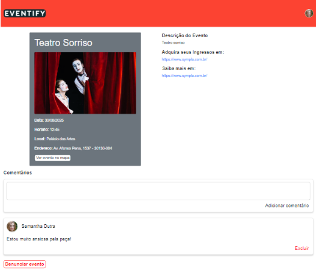
Funcionalidade 08 - Exibir evento no mapa
Tela onde a localização de evento específico será exibida em um mapa do Google. Caso a pessoa permita o navegar obter sua localização, esta também será exibida no mapa.
- Estrutura de dados: Eventos
- Instruções de acesso:
- Abra um navegador de Internet e informe a seguinte URL: https://replit.com/join/vwqjigzsgn-wagneracviana
- Clique no card de um evento
- Clique no botão Ver evento no mapa
Estruturas de Dados
Descrição das estruturas de dados utilizadas na solução com exemplos no formato JSON.
Estrutura de Dados - Pessoas
Registro dos usuários do sistema utilizados para login e para o perfil do sistema
{
"pessoas": [
{
"nome": "Igor Mendes",
"cidade": "Belo Horizonte",
"email": "igor@email.com",
"interesses": [
"festival",
"museu",
"café"
],
"tipoUsuario": "promotor",
"login": "igor@email.com",
"senha": "123",
"id": "905cf0dd-bcff-4145-a4ab-db505b6d4cf9",
"foto": {{base64}},
"eventosFavoritos": [
{
"id": "55b46784-addb-4eda-a539-6893f68ba80f"
}
],
"eventosCriados": [
{
"id": "55346e10-2cf2-470e-b020-51860cbb7474"
},
{
"id": "bd4c2dfe-e78e-46b2-8f4f-e777f96b1e74"
}
]
},
...
]
}
Estrutura de Dados - Eventos
Eventos da aplicação
{
"eventos": [
{
"nome": "Teatro Felix",
"data": "12/12/2025",
"horario": "13:00",
"local": "Sesc Palladium",
"cep": "30160-041",
"endereco": "Rua Rio de Janeiro",
"numero": "1046",
"vendaDeIngressos": "https://www.sympla.com.br/",
"saibaMais": "https://www.sympla.com.br/",
"descricao": "Teatro Felix",
"id": "dab67533-6f2a-42b1-b432-e997d4cb9a7a",
"promotorId": "905cf0dd-bcff-4145-a4ab-db505b6d4cf9",
"comentarios": [
{
"id": "cc734c46-ee1e-4b68-9106-b19bb9e9aa91",
"usuarioId": "a82c1f5e-4d97-44ad-ae73-03883d5c2d27",
"foto": "",
"nome": "Felipe",
"texto": "Estou muito animado!"
}
],
"imagem":{{base64}},
"denuncias": [
{
"id": "fe62c398-f6de-425a-8b84-1fc248a09edf",
"usuarioId": "7c30208f-e6ce-4da0-a298-262eb5cf944e",
"motivo": "As informações estão incorretas.",
"descricao": "O local do evento não é esse."
}
]
},
...
]
}
Módulos e APIs
Esta seção apresenta os módulos e APIs utilizados na solução.
APIs:
- Google Maps - https://developers.google.com/maps/documentation/geocoding/overview?hl=pt-br
- Receita WS - https://developers.receitaws.com.br/#/
- Via CEP - https://viacep.com.br/
Icons:
- Icons Font Face - https://fontawesome.com/icons
Scripts:
- jQuery - http://www.jquery.com/
- Bootstrap 4 - http://getbootstrap.com/
FAQ
Perguntas e respostas comuns associadas ao projeto.
- Intale a versão mais recente do node: https://nodejs.org/en/download/prebuilt-installer
- Configure a variável npm no seu ambiente: https://medium.com/@januario86/configurando-vari%C3%A1veis-de-ambiente-do-node-73cd8d8075e8
- Baixe o projeto EVENTIFY, disponibilizado nesta página
- Descompacte a paste do projeto
- No promt de comandos, acesse a pasta do projeto. Caso preferir, abra o projeto no Visual Studio Code e faça isso dentro do programa.
- Execute o comando "npm install" para baixar as dependências
- Execute o comando "npm start" para inicializar localmente o projeto
Referências Bibliográficas
Esta seção apresenta as referências bibliográficas utilizadas no projeto.
- Bakshy, E.; Messing, S.; Adamic, L. A. (2015). Exposure to ideologically diverse news and opinion on Facebook. Science.
- Januário, Felipe. (2023). Configurando variáveis de ambiente do Node. Medium. Disponível em: https://medium.com/@januario86/configurando-vari%C3%A1veis-de-ambiente-do-node-73cd8d8075e8. Acesso em: 16 jun. 2024.
- Littlefield, A. (2016). Guia da metodologia ágil e scrum para iniciantes. Disponível em: https://blog.trello.com/br/scrum-metodologia-agil. Acesso em: 26 mai. 2020.
- Newman, N.; Fletcher, R.; Kalogeropoulos, A.; Nielsen, R. K. (2019). Reuters Institute Digital News Report 2019. Reuters Institute for the Study of Journalism. Disponível em: https://reutersinstitute.politics.ox.ac.uk/sites/default/files/2019-06/DNR_2019_FINAL_0.pdf. Acesso em: 26 mai. 2020.